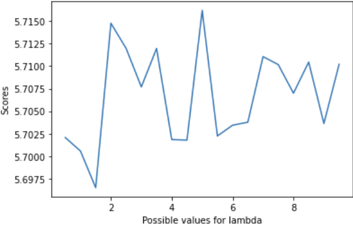
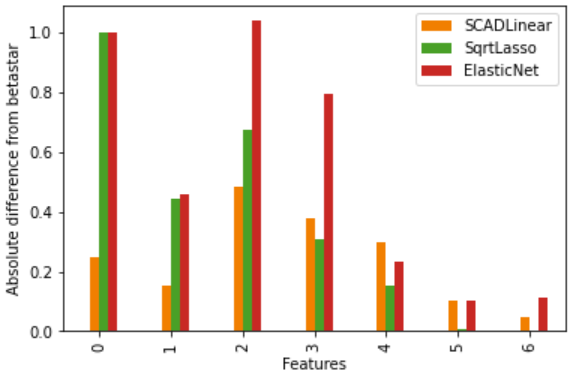
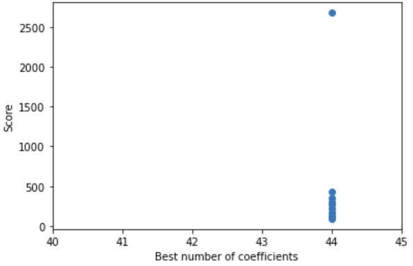

Assignment 3: Smoothly Clipped Absolute Deviation
I created a class that implements the SCAD penalty for variable selection and regularization. This class was created in PyTorch.
How SCAD works
SCAD is a penalty function that is useful for correlated variables, because it encourages sparsity (predicted coefficients having a value of 0) in its predictions for coefficients. Its derivative is used for penalty functions.
PyTorch
Writing models in PyTorch makes them more efficient because of the way numpy (the typical alternative) stores data. However, it requires clever workarounds to be able to use typical machine learning tools.
Using Real Data for Variable Selection
I wrote the SCADLinear class, which uses a linear regression model and the SCAD penalty to predict values. The SCAD penalty selects variables based on their importance, which can be useful for highly correlated variables. I used this class to predict the sugar content in cereals, using the cereals dataset. The model is fairly successful at predicting sugar content, but it was important to confirm the best set of hyperparameters, so below is a chart of the variation in score based on a changing lambda value.

Using Generated Data with a Correlation Structure
First, I generated 200 samples of strongly correlated data. SCADLinear seemed to consistently perform the best when compared to ElasticNet and Square root Lasso (which were introduced to us in class) on this set of strongly correlated data. While all three models had scores within a close range of each other (between 2 and 3), SCADLinear seemed to always have the lowest mean squared error. Additionally, SCADLinear's coefficients seemed to most closely match the actual coefficients specified in beta star (the original/"correct" coefficients). I mapped the absolute difference from the original coefficients for each of the three models' predicted coefficients to display just how precise SCADLinear was in comparison to the other models.

Quadratic interaction terms and the Concrete Dataset
I determined that the best weights for SCAD did not vary too much within the parameters of [0.001, 0.01, 0.1] for lambda and [2.0, 3.0, 4.0] for a. Because SCADLinear was written with PyTorch and was missing some scikit-learn compliant functions, I had to write my own model for a simple hyperparameter search. However, this could be an opportunity for further investigation, as perhaps the learning rate of the model is an important factor. I did 10-fold cross-validation on the concrete dataset with quadratic interaction terms (which I added using scikit-learn's PolynomialFeatures). The majority of iterations found that there were 44 important coefficients (with a threshold of 0.01 considered closest to zero), although sometimes one coefficient was deemed unnecessary, lowering the number of coefficients to 43. This exception did not occur on the final test of the data, but the plot is included here to show that there is a minor outlier. The last run of every k-fold had an unusually high score, which could be due to a fitting error. However, most other scores were fairly consistent. Below is a plot of the number of coefficients greater than zero versus the score.

The code for this project is this github repo, and you can also find a HTML version here. The scad_linear file contains my SCADLinear class.